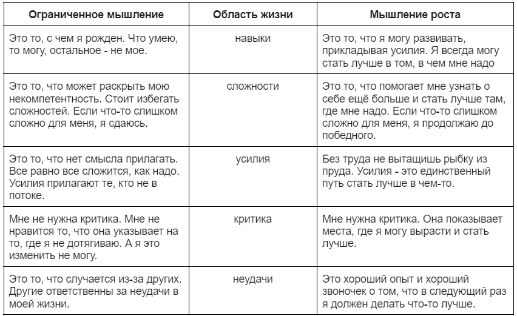
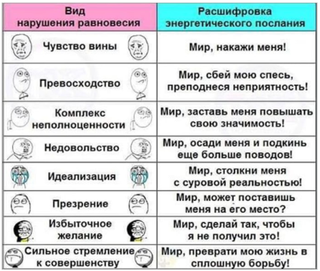

От малодушия к смирению. Сокровища и ядовитые змеи.
Местами излишне категоричный тон и резкие оценочные суждения могут вызвать защитную реакцию у некоторых читателей в виде дискомфорта или желания защитить свою позицию.
Притча с глубоким психологическим смыслом
Недавно услышал классную историю.
Давным давно жили-были евреи и Моисей. И был у них своего рода пеший поход. Очень долгий поход без комфорта и развлечений. И как-то так произошло, что в какой-то момент наскучил этот поход евреям, начали они матодушничать и роптать на Бога. Типа, ну когда уже все это закончится, че-то тут все не так, как обещали в турагентстве.
Посмотрел Бог на евреев и послал им ядовитых змей. Змеи кусали евреев - евреи умирали. Поумирав от укусов змей какое-то время, евреи попросили Моисея передать Богу, что они были неправы, раскаиваются и просят Бога убрать ядовитых змей.
Посмотрел Бог на евреев и решил не убирать змей. Но сказал соорудить им медного змея и смотреть на него тем, кого змея покусает. Когда людей кусали, и они смотрели на медного змея, Господь спасал их. Так он помог людям смириться и довериться Ему.
🤔 Услышав эту историю, я представил Бога. Бородатый мужик в трениках, который сидит с утра на своей небесной кухне с панорамным видом и размышляет о том, что же будет лучше для евреев:
Эту история прозвучала в подкасте психолога Джордана Питерсона. В контексте этой истории, он поднял вопрос о том: чему мы хотим научить своих детей? Какой пример ходим им показать? Защищать ли их, прятать ли их от опасностей этой жизни, если они просят? Или учить их сталкиваться с задачами этого мира, даже если они не просили?
Я же расширю эту историю до того, чему мы хотим научить своих родителей и всех остальных, кто посягает на нашу улыбку потому, что тупо хочет сделать свою жизнь проще за счет нас, людей с вопросами по зубам.
Давным давно жили-были евреи и Моисей. И был у них своего рода пеший поход. Очень долгий поход без комфорта и развлечений. И как-то так произошло, что в какой-то момент наскучил этот поход евреям, начали они матодушничать и роптать на Бога. Типа, ну когда уже все это закончится, че-то тут все не так, как обещали в турагентстве.
Посмотрел Бог на евреев и послал им ядовитых змей. Змеи кусали евреев - евреи умирали. Поумирав от укусов змей какое-то время, евреи попросили Моисея передать Богу, что они были неправы, раскаиваются и просят Бога убрать ядовитых змей.
Посмотрел Бог на евреев и решил не убирать змей. Но сказал соорудить им медного змея и смотреть на него тем, кого змея покусает. Когда людей кусали, и они смотрели на медного змея, Господь спасал их. Так он помог людям смириться и довериться Ему.
🤔 Услышав эту историю, я представил Бога. Бородатый мужик в трениках, который сидит с утра на своей небесной кухне с панорамным видом и размышляет о том, что же будет лучше для евреев:
- защитить/спрятать их от опасности и сделать их жизнь легче, как они просят;
- дать им возможность сталкиваться лицом к лицу с опасностью и сделать их сильнее, чего они вроде бы не просили.
Эту история прозвучала в подкасте психолога Джордана Питерсона. В контексте этой истории, он поднял вопрос о том: чему мы хотим научить своих детей? Какой пример ходим им показать? Защищать ли их, прятать ли их от опасностей этой жизни, если они просят? Или учить их сталкиваться с задачами этого мира, даже если они не просили?
Я же расширю эту историю до того, чему мы хотим научить своих родителей и всех остальных, кто посягает на нашу улыбку потому, что тупо хочет сделать свою жизнь проще за счет нас, людей с вопросами по зубам.
Два подхода
Для меня самым интересным стало то, что в этой истории говорится о двух типах людей. Одни малодушничают и ропщут, вторые практикуют смирение и доверие. При этом переход из первой группы во вторую совершается через столкновение с ядовитыми змеями (опасностями, сложностями) и их принятие, а не через избегание проблем.
Почему же так важно сталкиваться со сложностями?
Почему так важно идти на добровольную конфронтацию с жизнью, а не избегать ее?
Почему нельзя просто спокойно жить, никого не трогать и утопать в дофамине и оргазмах бытия?
Почему же так важно сталкиваться со сложностями?
Почему так важно идти на добровольную конфронтацию с жизнью, а не избегать ее?
Почему нельзя просто спокойно жить, никого не трогать и утопать в дофамине и оргазмах бытия?
Малодушие — слабость характера, часто выраженная в фобии, мелкой зависти и непроизвольной агрессии.
Роптать - выражать недовольство, обиду, сетовать.
Может быть для того, чтобы быть смелее и приспособленнее к жизни? А может и для чего-то ещё. Например, вы знали, что если вы решите приложить усилие, чтобы получить печеньку, то она будет вкуснее, чем если вам дадут ее просто так? Оказывается, что в процессе приложенных усилий к получению чего-либо мы получаем гораздо больше, чем только результат.
В первую очередь, в результате своих действий мы получаем то, кем мы становимя. Например, возьмем спортзал. Ученые пришли к выводу, что ходящие в качалку становятся уверенными в себе не столько из-за того, что у них тело становится более подтянутым и рельефным, сколько из-за того, что они регулярно ходят в спортзал как таковой.
Во вторых, мы получаем больше дофамина. Психологические исследования неоднократно подтверждают интересный феномен: мы больше ценим то, что получаем через собственные усилия. В классическом эксперименте, названном «эффект ИКЕА», участники, которые сами собирали простую мебель, оценивали ее значительно выше, чем идентичные уже собранные предметы. Аналогично, в исследовании о пищевых предпочтениях, было показано, что люди находят еду вкуснее, если принимали участие в ее приготовлении.
Нейробиологически это объясняется особенностями работы дофаминовой системы. При усилии, направленном на достижение цели, активируется не только система вознаграждения при получении результата, но и дополнительные нервные цепи, связанные с чувством агентности и самоэффективности. Как показали исследования с использованием функциональной МРТ, мозг выделяет больше дофамина не просто при получении награды, а при получении награды, которую человек заработал сам.
В первую очередь, в результате своих действий мы получаем то, кем мы становимя. Например, возьмем спортзал. Ученые пришли к выводу, что ходящие в качалку становятся уверенными в себе не столько из-за того, что у них тело становится более подтянутым и рельефным, сколько из-за того, что они регулярно ходят в спортзал как таковой.
Во вторых, мы получаем больше дофамина. Психологические исследования неоднократно подтверждают интересный феномен: мы больше ценим то, что получаем через собственные усилия. В классическом эксперименте, названном «эффект ИКЕА», участники, которые сами собирали простую мебель, оценивали ее значительно выше, чем идентичные уже собранные предметы. Аналогично, в исследовании о пищевых предпочтениях, было показано, что люди находят еду вкуснее, если принимали участие в ее приготовлении.
Нейробиологически это объясняется особенностями работы дофаминовой системы. При усилии, направленном на достижение цели, активируется не только система вознаграждения при получении результата, но и дополнительные нервные цепи, связанные с чувством агентности и самоэффективности. Как показали исследования с использованием функциональной МРТ, мозг выделяет больше дофамина не просто при получении награды, а при получении награды, которую человек заработал сам.
В контексте описанной выше библейской истории и современной психологии это означает, что не избавление от трудностей, а то, кем мы становитмся в процессе преодоления трудностей, становится ключевым элементом личностного роста.
В известном мономифе Джозефа Кемпбелла также говорится про два типа людей, но в контексте ответа на мистический зов. Этот зов время от времени приходит к каждому из нас и предполагает столкновение с трудностями и испытаниями, в которых мы не очень компетентны. Одни доверяются пришедшему зову, оставляют безопасность и отправляются непонятно куда и непонятно зачем. Другие выбирают оставаться в известной безопасности и отказываются следовать за порывами своей души.
Думаю, вы догадались, кто из них будет роптать и малодушничать, а кто будет в смирении и доверии идти свой путь и сталкиваться с неизвестными трудностями.
Думаю, вы догадались, кто из них будет роптать и малодушничать, а кто будет в смирении и доверии идти свой путь и сталкиваться с неизвестными трудностями.
Откуда берется улыбка.
Кстати, вы замечали, что наш мир не настолько полон радужных единорогов и бесконечных полей с цветами, родниками и бутербродами для перекуса. Каким-то образом в нем есть сложности. Они повсюду, они в любой коммуникации, где мы что-то хотим или нам что-то надо. Эти сложности очень легко могут подпортить любую улыбку. Но могут также ее и создать.
Вы задумывались, почему в сказках сокровища часто не лежат просто так. Обычно их или кто-то охраняет, например, какой-нибудь дракон, или нужно преодолеть путь каких-либо препятствий, чтобы до этих сокровищ добраться. Если ваши сокровища - это здоровые зубы и счастливые отношения, то кто их охраняет и что нужно преодолеть?
🔸 Может быть нужно убить какую-то змею, которая рыгает огнем? Только представьте, вы её убиваете и сразу же магическая змеиная сила наполняет ваш дентин, делая его прочнее керамики. Как вам идея?
🔸 Может быть нужно достать со дна Черного моря старую Нокию 3210, которая все еще работает? Вы прикладываете её к зубам, включаете виброрежим и от такой стимуляции у вас обновляется эмаль.
🔸 А может быть просто нужно стать удобным себе, а не разного рода "евреям" в вашем окружении? Вы шлете нафиг моральные ценности, перестаете быть хорошими и всевышний дарит вам третий ряд зубов. Такое вам больше подходит?
Но что если я вам скажу, что дракон, который охраняет возможность зубной регенерации - это всего лишь наше удобное и ограниченное мышление, построенное на детских страхах и вторичных выгодах?
Я думаю, вы понимаете, к чему я клоню.
👉 Нет ничего опаснее, чем собственное мышление, которое помогает нам разрушать свою улыбку и отношения. Даже ядовитый голодный тигр убьет нас лишь один раз. Мышление может убивать нас каждый день, по чуть-чуть, делая из нашей жизни настоящий ад. И раз уж мы заговорили о мышлении в контексте улыбки и нашей жизни, то давайте сравним два вида мышления:
Вы задумывались, почему в сказках сокровища часто не лежат просто так. Обычно их или кто-то охраняет, например, какой-нибудь дракон, или нужно преодолеть путь каких-либо препятствий, чтобы до этих сокровищ добраться. Если ваши сокровища - это здоровые зубы и счастливые отношения, то кто их охраняет и что нужно преодолеть?
🔸 Может быть нужно убить какую-то змею, которая рыгает огнем? Только представьте, вы её убиваете и сразу же магическая змеиная сила наполняет ваш дентин, делая его прочнее керамики. Как вам идея?
🔸 Может быть нужно достать со дна Черного моря старую Нокию 3210, которая все еще работает? Вы прикладываете её к зубам, включаете виброрежим и от такой стимуляции у вас обновляется эмаль.
🔸 А может быть просто нужно стать удобным себе, а не разного рода "евреям" в вашем окружении? Вы шлете нафиг моральные ценности, перестаете быть хорошими и всевышний дарит вам третий ряд зубов. Такое вам больше подходит?
Но что если я вам скажу, что дракон, который охраняет возможность зубной регенерации - это всего лишь наше удобное и ограниченное мышление, построенное на детских страхах и вторичных выгодах?
Я думаю, вы понимаете, к чему я клоню.
👉 Нет ничего опаснее, чем собственное мышление, которое помогает нам разрушать свою улыбку и отношения. Даже ядовитый голодный тигр убьет нас лишь один раз. Мышление может убивать нас каждый день, по чуть-чуть, делая из нашей жизни настоящий ад. И раз уж мы заговорили о мышлении в контексте улыбки и нашей жизни, то давайте сравним два вида мышления:
- Ограниченное мышление, которое помогает выбирать безопасность, быть хорошими для кого-то, малодушничать и роптать;
- Мышление роста, которое помогает идти в неизвестное, сталкиваться с трудностями, доверять и не выёживаться на судьбу, а брать ответственность за свой рост в этой жизни.

Если коротко и просто, то ограниченное мышление - это любые мысли, слова, убеждения, которые помогают нам объяснить собственную неспособность чего-то достичь. Это мышление порой, как теплое одеялко, дает ощущение безопасности и защищенности. Представьте какая милота: одеялко безопасности. Ми-ми-мимишечка, пу-пу-пусечка!
Идея для мерча: одеяло с большой надписью на внешней стороне: “одеялко безопасности и защищенности” и небольшой фразой на внутренней стороне, которую говорит подмигивающий единорог: “Ты самая лучшая/самый лучший! Ты все правильно делаешь!”
Итак, резюме:
команда травоядных получает банан,
команда малодушных получает ядовитых змей,
команда смирившихся и получает неизвестность, сложности и сокровища.
Смирись со своим путем и прими вызов жизни или варись в болоте ядовитых змей живи в рутине и проблемах, которые портят тебе улыбку.
🗣 Выбирай Путь Героя, расти в коммуникации, реализовывай свое предназначение, возвращай свою улыбку. Твое препятствие - это твоя лимбическая система, которая обеспечивает твою безопасность. Именно она решила, какое качество отношений и какое количество зубов безопасно для тебя.
Ты либо подчиняешься ей и делаешь вид, что пытаешься что-то изменить.
Либо бросаешь ей вызов и встаешь на Путь Героя, где единственными монстрами и злодеями будут собственные ограничения и страхи.
В конце сокровища.
Ты либо подчиняешься ей и делаешь вид, что пытаешься что-то изменить.
Либо бросаешь ей вызов и встаешь на Путь Героя, где единственными монстрами и злодеями будут собственные ограничения и страхи.
В конце сокровища.
Родителям будущих поколений посвящается (немного дискомфортной информации)
Выбирать Путь жертвы, Путь безопасного одеялка, Путь малодушия тоже можно, но помни: Бородатый мужик наверху уже припас стаю ядовитых змей, чтобы они тебя покусали за твои оправдания и объяснения другим своего когнитивного диссонанса.
Долгосрочные исследования в области детской психологии показывают, что дети перенимают родительские стратегии преодоления трудностей с высокой вероятностью: по данным современных исследований, около 63% детей во взрослом возрасте демонстрируют те же паттерны избегания проблем, что и их родители. Более того, дети, которые видят у родителей модель активного решения проблем вместо их избегания, почти в половину случаев (на 47%) чаще проявляют настойчивость и в своей жизни. Эти данные подчеркивают огромную ответственность, которая лежит на нас как родителях: наш собственный подход к жизненным трудностям становится прямым наследием, которое мы оставляем своим детям.
Поэтому, если вы все же решите оставить детям наследие, достойное ядовитых змей, то вот вам табличка по которой вы сможете ориентироваться: чему уже научили, а где ещё стоит поднажать.
Долгосрочные исследования в области детской психологии показывают, что дети перенимают родительские стратегии преодоления трудностей с высокой вероятностью: по данным современных исследований, около 63% детей во взрослом возрасте демонстрируют те же паттерны избегания проблем, что и их родители. Более того, дети, которые видят у родителей модель активного решения проблем вместо их избегания, почти в половину случаев (на 47%) чаще проявляют настойчивость и в своей жизни. Эти данные подчеркивают огромную ответственность, которая лежит на нас как родителях: наш собственный подход к жизненным трудностям становится прямым наследием, которое мы оставляем своим детям.
Поэтому, если вы все же решите оставить детям наследие, достойное ядовитых змей, то вот вам табличка по которой вы сможете ориентироваться: чему уже научили, а где ещё стоит поднажать.

К смирению и доверию через ядовитых змей.
Если вы уже достаточно вкусили торжеств из второго столбика, устали от этого и готовы, как и евреи в свое время, признать свою неправоту, то знайте: волшебной таблетки не будет. Бог не забирает змей. Скорее он говорит, что все мы герои, а в жизни каждого Героя случается серия катаклизмов. Зачем? Для того, чтобы избавиться от своей глупости и отживших иллюзий, чтобы мы могли развиваться и трансформироваться.
Итак, что же делать с жизнью-то? В своей книге12 правил жизни Джордан Питерсон отвечает на этот вопрос так: "Ведите себя так, как будто ваше существование важнее важнее, чем ваше несуществование. Идите в неизвестность этого мира добровольно, смело и с доверием". Почитайте его на досуге. Кстати, именно у него услышал о том, что процесс столкновения со сложностями и испытаниями уже описан в психофизиологии.
Итак, что же делать с жизнью-то? В своей книге12 правил жизни Джордан Питерсон отвечает на этот вопрос так: "Ведите себя так, как будто ваше существование важнее важнее, чем ваше несуществование. Идите в неизвестность этого мира добровольно, смело и с доверием". Почитайте его на досуге. Кстати, именно у него услышал о том, что процесс столкновения со сложностями и испытаниями уже описан в психофизиологии.
Ведите себя так, как будто ваше существование важнее важнее, чем ваше несуществование. Идите в неизвестность этого мира добровольно, смело и с доверием.
При случайном столкновении со сложностью у человека рождается стрессовый ответ лимбической системы, разрушительный при продолжительности, приводящий к усилению страха перед раздражителем. А вот при добровольном столкновении с тем же раздражителем всё меняется. Разрушительность уходит, на смену страху приходит азарт и смелость. На этом принципе построены экспозионная терапия и, судя по всему, спарринги в боевых искусствах.
Экспози́ция, экспозиционная терапия — техника в поведенческой психотерапии, применяемая для лечения тревожных расстройств. Суть техники заключается в экспозиции пациента к источнику тревоги или её контексту, в отсутствие прямой опасности.
Спарринг — это тренировочный бой, проводимый в контролируемой обстановке. 3 Он направлен на отработку техники, тактики, развитие навыков. 3 Бой же — это соревнование, где результат важен.
К слову, в Исцеленнии отношений именно в спаррингах мы учимся коммуникации. Чтобы в реальной жизни от привычных раздражителей у нас не падало забрало. Хороший пример этого описала тренер проекта, Гульназ Казакова, в посте про себя и сына.
Радоваться от того, что у тебя не “падает забрало лимбической системы” и режим тревоги не включается, а вместо этого включается доверие и спокойствие - хороший пример победы над своими отжившими стратегиями! Присоединяйся к работе с зубами через отношения! Взгреем твои сложности вместе!
Радоваться от того, что у тебя не “падает забрало лимбической системы” и режим тревоги не включается, а вместо этого включается доверие и спокойствие - хороший пример победы над своими отжившими стратегиями! Присоединяйся к работе с зубами через отношения! Взгреем твои сложности вместе!
😲🦷 Если же тебе интересно, что бывает с теми, кто выбирает жить в галлюцинациях своей правоты и не работать с зубами через отношения, то рекомендую тебе прочитать очень страшную историю про двадцать первый зуб.